Chapter 2: Psychological Research¶
Introduction¶
Have you ever wondered whether the violence you see on television affects your behavior? Are you more likely to behave aggressively in real life after watching people behave violently in dramatic situations on the screen? Or, could seeing fictional violence actually get aggression out of your system, causing you to be more peaceful? How are children influenced by the media they are exposed to? A psychologist interested in the relationship between behavior and exposure to violent images might ask these very questions.
Since ancient times, humans have been concerned about the effects of new technologies on our behaviors and thinking processes. The Greek philosopher Socrates, for example, worried that writing—a new technology at that time—would diminish people’s ability to remember because they could rely on written records rather than committing information to memory. In our world of rapidly changing technologies, questions about their effects on our daily lives and their resulting long-term impacts continue to emerge. In addition to the impact of screen time (on smartphones, tablets, computers, and gaming), technology is emerging in our vehicles (such as GPS and smart cars) and residences (with devices like Alexa or Google Home and doorbell cameras). As these technologies become integrated into our lives, we are faced with questions about their positive and negative impacts. Many of us find ourselves with a strong opinion on these issues, only to find the person next to us bristling with the opposite view.
How can we go about finding answers that are supported not by mere opinion, but by evidence that we can all agree on? The findings of psychological research can help us navigate issues like this.
2.1 Why Is Research Important?¶
Learning Objectives
By the end of this section, you will be able to:
- Explain how scientific research addresses questions about behavior
- Discuss how scientific research guides public policy
- Appreciate how scientific research can be important in making personal decisions
Scientific research is a critical tool for successfully navigating our complex world. Without it, we would be forced to rely solely on intuition, other people’s authority, and blind luck. While many of us feel confident in our abilities to decipher and interact with the world around us, history is filled with examples of how very wrong we can be when we fail to recognize the need for evidence in supporting claims. At various times in history, we would have been certain that the sun revolved around a flat earth, that the earth’s continents did not move, and that mental illness was caused by possession (Figure 2.2). It is through systematic scientific research that we divest ourselves of our preconceived notions and superstitions and gain an objective understanding of ourselves and our world.
The goal of all scientists is to better understand the world around them. Psychologists focus their attention on understanding behavior, as well as the cognitive (mental) and physiological (body) processes that underlie behavior. In contrast to other methods that people use to understand the behavior of others, such as intuition and personal experience, the hallmark of scientific research is that there is evidence to support a claim. Scientific knowledge is empirical: It is grounded in objective, tangible evidence that can be observed time and time again, regardless of who is observing.
While behavior is observable, the mind is not. If someone is crying, we can see behavior. However, the reason for the behavior is more difficult to determine. Is the person crying due to being sad, in pain, or happy? Sometimes we can learn the reason for someone’s behavior by simply asking a question, like “Why are you crying?” However, there are situations in which an individual is either uncomfortable or unwilling to answer the question honestly, or is incapable of answering. For example, infants would not be able to explain why they are crying. In such circumstances, the psychologist must be creative in finding ways to better understand behavior. This chapter explores how scientific knowledge is generated, and how important that knowledge is in forming decisions in our personal lives and in the public domain.
Use of Research Information¶
Trying to determine which theories are and are not accepted by the scientific community can be difficult, especially in an area of research as broad as psychology. More than ever before, we have an incredible amount of information at our fingertips, and a simple internet search on any given research topic might result in a number of contradictory studies. In these cases, we are witnessing the scientific community going through the process of reaching a consensus, and it could be quite some time before a consensus emerges. For example, the explosion in our use of technology has led researchers to question whether this ultimately helps or hinders us. The use and implementation of technology in educational settings has become widespread over the last few decades. Researchers are coming to different conclusions regarding the use of technology. To illustrate this point, a study investigating a smartphone app targeting surgery residents (graduate students in surgery training) found that the use of this app can increase student engagement and raise test scores (Shaw & Tan, 2015). Conversely, another study found that the use of technology in undergraduate student populations had negative impacts on sleep, communication, and time management skills (Massimini & Peterson, 2009). Until sufficient amounts of research have been conducted, there will be no clear consensus on the effects that technology has on a student's acquisition of knowledge, study skills, and mental health.
In the meantime, we should strive to think critically about the information we encounter by exercising a degree of healthy skepticism. When someone makes a claim, we should examine the claim from a number of different perspectives: what is the expertise of the person making the claim, what might they gain if the claim is valid, does the claim seem justified given the evidence, and what do other researchers think of the claim? This is especially important when we consider how much information in advertising campaigns and on the internet claims to be based on “scientific evidence” when in actuality it is a belief or perspective of just a few individuals trying to sell a product or draw attention to their perspectives.
We should be informed consumers of the information made available to us because decisions based on this information have significant consequences. One such consequence can be seen in politics and public policy. Imagine that you have been elected as the governor of your state. One of your responsibilities is to manage the state budget and determine how to best spend your constituents’ tax dollars. As the new governor, you need to decide whether to continue funding early intervention programs. These programs are designed to help children who come from low-income backgrounds, have special needs, or face other disadvantages. These programs may involve providing a wide variety of services to maximize the children's development and position them for optimal levels of success in school and later in life (Blann, 2005). While such programs sound appealing, you would want to be sure that they also proved effective before investing additional money in these programs. Fortunately, psychologists and other scientists have conducted vast amounts of research on such programs and, in general, the programs are found to be effective (Neil & Christensen, 2009; Peters-Scheffer, Didden, Korzilius, & Sturmey, 2011). While not all programs are equally effective, and the short-term effects of many such programs are more pronounced, there is reason to believe that many of these programs produce long-term benefits for participants (Barnett, 2011). If you are committed to being a good steward of taxpayer money, you would want to look at research. Which programs are most effective? What characteristics of these programs make them effective? Which programs promote the best outcomes? After examining the research, you would be best equipped to make decisions about which programs to fund.
Link to Learning
Watch this video about early childhood program effectiveness to learn how scientists evaluate effectiveness and how best to invest money into programs that are most effective.
Ultimately, it is not just politicians who can benefit from using research in guiding their decisions. We all might look to research from time to time when making decisions in our lives. Imagine that your sister, Maria, expresses concern about her two-year-old child, Umberto. Umberto does not speak as much or as clearly as the other children in his daycare or others in the family. Umberto's pediatrician undertakes some screening and recommends an evaluation by a speech pathologist, but does not refer Maria to any other specialists. Maria is concerned that Umberto's speech delays are signs of a developmental disorder, but Umberto's pediatrician does not; she sees indications of differences in Umberto's jaw and facial muscles. Hearing this, you do some internet searches, but you are overwhelmed by the breadth of information and the wide array of sources. You see blog posts, top-ten lists, advertisements from healthcare providers, and recommendations from several advocacy organizations. Why are there so many sites? Which are based in research, and which are not?
In the end, research is what makes the difference between facts and opinions. Facts are observable realities, and opinions are personal judgments, conclusions, or attitudes that may or may not be accurate. In the scientific community, facts can be established only using evidence collected through empirical research.
Notable Researchers¶
Psychological research has a long history involving important figures from diverse backgrounds. While the introductory chapter discussed several researchers who made significant contributions to the discipline, there are many more individuals who deserve attention in considering how psychology has advanced as a science through their work (Figure 2.3). For instance, Margaret Floy Washburn (1871–1939) was the first woman to earn a PhD in psychology. Her research focused on animal behavior and cognition (Margaret Floy Washburn, PhD, n.d.). Mary Whiton Calkins (1863–1930) was a preeminent first-generation American psychologist who opposed the behaviorist movement, conducted significant research into memory, and established one of the earliest experimental psychology labs in the United States (Mary Whiton Calkins, n.d.).
Francis Sumner (1895–1954) was the first African American to receive a PhD in psychology in 1920. His dissertation focused on issues related to psychoanalysis. Sumner also had research interests in racial bias and educational justice. Sumner was one of the founders of Howard University’s department of psychology, and because of his accomplishments, he is sometimes referred to as the “Father of Black Psychology.” Thirteen years later, Inez Beverly Prosser (1895–1934) became the first African American woman to receive a PhD in psychology. Prosser’s research highlighted issues related to education in segregated versus integrated schools, and ultimately, her work was very influential in the hallmark Brown v. Board of Education Supreme Court ruling that segregation of public schools was unconstitutional (Ethnicity and Health in America Series: Featured Psychologists, n.d.).
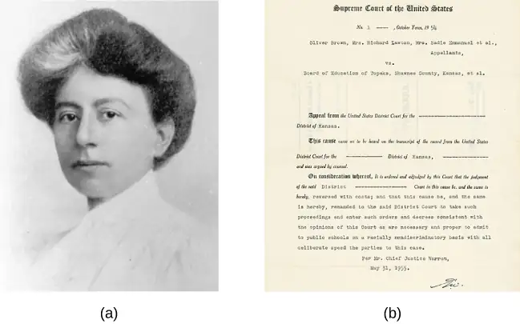
Although the establishment of psychology’s scientific roots occurred first in Europe and the United States, it did not take much time until researchers from around the world began to establish their own laboratories and research programs. For example, some of the first experimental psychology laboratories in South America were founded by Horatio Piñero (1869–1919) at two institutions in Buenos Aires, Argentina (Godoy & Brussino, 2010). In India, Gunamudian David Boaz (1908–1965) and Narendra Nath Sen Gupta (1889–1944) established the first independent departments of psychology at the University of Madras and the University of Calcutta, respectively. These developments provided an opportunity for Indian researchers to make important contributions to the field (Gunamudian David Boaz, n.d.; Narendra Nath Sen Gupta, n.d.).
When the American Psychological Association (APA) was first founded in 1892, all of the members were White males (Women and Minorities in Psychology, n.d.). However, by 1905, Mary Whiton Calkins was elected as the first female president of the APA, and by 1946, nearly one-quarter of American psychologists were female. Psychology became a popular degree option for students enrolled in the nation’s historically Black higher education institutions, increasing the number of Black Americans who went on to become psychologists. Given demographic shifts occurring in the United States and increased access to higher educational opportunities among historically underrepresented populations, there is reason to hope that the diversity of the field will increasingly match the larger population, and that the research contributions made by the psychologists of the future will better serve people of all backgrounds (Women and Minorities in Psychology, n.d.).
The Process of Scientific Research¶
Scientific knowledge is advanced through a process known as the scientific method. Basically, ideas (in the form of theories and hypotheses) are tested against the real world (in the form of empirical observations), and those empirical observations lead to more ideas that are tested against the real world, and so on. In this sense, the scientific process is circular. The types of reasoning within the circle are called deductive and inductive. In deductive reasoning, ideas are tested in the real world; in inductive reasoning, real-world observations lead to new ideas (Figure 2.4). These processes are inseparable, like inhaling and exhaling, but different research approaches place different emphasis on the deductive and inductive aspects.
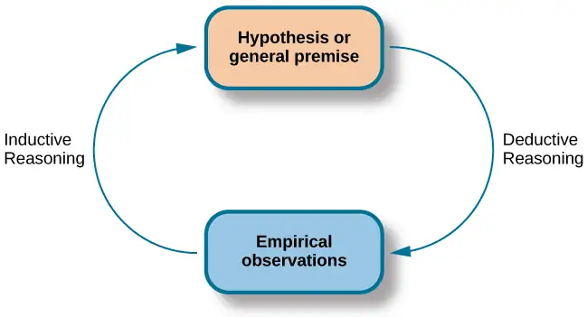
In the scientific context, deductive reasoning begins with a generalization—one hypothesis—that is then used to reach logical conclusions about the real world. If the hypothesis is correct, then the logical conclusions reached through deductive reasoning should also be correct. A deductive reasoning argument might go something like this: All living things require energy to survive (this would be your hypothesis). Ducks are living things. Therefore, ducks require energy to survive (logical conclusion). In this example, the hypothesis is correct; therefore, the conclusion is correct as well. Sometimes, however, an incorrect hypothesis may lead to a logical but incorrect conclusion. Consider this argument: all ducks are born with the ability to see. Quackers is a duck. Therefore, Quackers was born with the ability to see. Scientists use deductive reasoning to empirically test their hypotheses. Returning to the example of the ducks, researchers might design a study to test the hypothesis that if all living things require energy to survive, then ducks will be found to require energy to survive.
Deductive reasoning starts with a generalization that is tested against real-world observations; however, inductive reasoning moves in the opposite direction. Inductive reasoning uses empirical observations to construct broad generalizations. Unlike deductive reasoning, conclusions drawn from inductive reasoning may or may not be correct, regardless of the observations on which they are based. For instance, you may notice that your favorite fruits—apples, bananas, and oranges—all grow on trees; therefore, you assume that all fruit must grow on trees. This would be an example of inductive reasoning, and, clearly, the existence of strawberries, blueberries, and kiwi demonstrate that this generalization is not correct despite it being based on a number of direct observations. Scientists use inductive reasoning to formulate theories, which in turn generate hypotheses that are tested with deductive reasoning. In the end, science involves both deductive and inductive processes.
For example, case studies, which you will read about in the next section, are heavily weighted on the side of empirical observations. Thus, case studies are closely associated with inductive processes as researchers gather massive amounts of observations and seek interesting patterns (new ideas) in the data. Experimental research, on the other hand, puts great emphasis on deductive reasoning.
We’ve stated that theories and hypotheses are ideas, but what sort of ideas are they, exactly? A theory is a well-developed set of ideas that propose an explanation for observed phenomena. Theories are repeatedly checked against the world, but they tend to be too complex to be tested all at once; instead, researchers create hypotheses to test specific aspects of a theory.
A hypothesis is a testable prediction about how the world will behave if our idea is correct, and it is often worded as an if-then statement (e.g., if I study all night, I will get a passing grade on the test). The hypothesis is extremely important because it bridges the gap between the realm of ideas and the real world. As specific hypotheses are tested, theories are modified and refined to reflect and incorporate the result of these tests Figure 2.5.
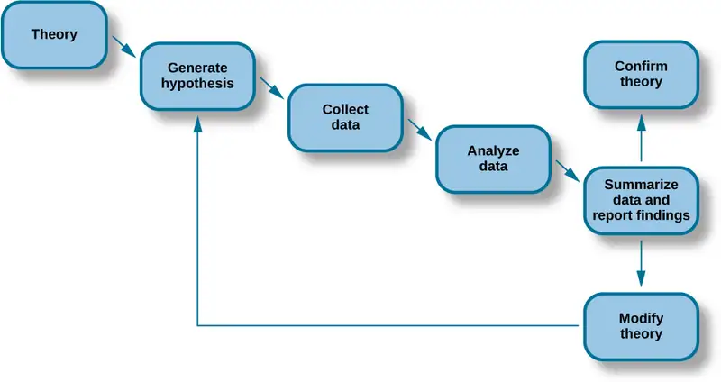
To see how this process works, let’s consider a specific theory and a hypothesis that might be generated from that theory. As you’ll learn in a later chapter, the James-Lange theory of emotion asserts that emotional experience relies on the physiological arousal associated with the emotional state. If you walked out of your home and discovered a very aggressive snake waiting on your doorstep, your heart would begin to race and your stomach churn. According to the James-Lange theory, these physiological changes would result in your feeling of fear. A hypothesis that could be derived from this theory might be that a person who is unaware of the physiological arousal that the sight of the snake elicits will not feel fear.
A scientific hypothesis is also falsifiable, or capable of being shown to be incorrect. Recall from the introductory chapter that Sigmund Freud had lots of interesting ideas to explain various human behaviors (Figure 2.6). However, a major criticism of Freud’s theories is that many of his ideas are not falsifiable; for example, it is impossible to imagine empirical observations that would disprove the existence of the id, the ego, and the superego—the three elements of personality described in Freud’s theories. Despite this, Freud’s theories are widely taught in introductory psychology texts because of their historical significance for personality psychology and psychotherapy, and these remain the root of all modern forms of therapy.
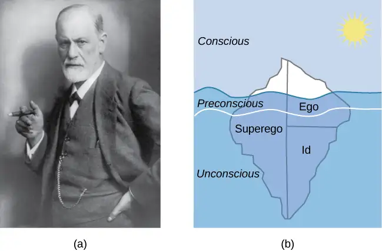
In contrast, the James-Lange theory does generate falsifiable hypotheses, such as the one described above. Some individuals who suffer significant injuries to their spinal columns are unable to feel the bodily changes that often accompany emotional experiences. Therefore, we could test the hypothesis by determining how emotional experiences differ between individuals who have the ability to detect these changes in their physiological arousal and those who do not. In fact, this research has been conducted and while the emotional experiences of people deprived of an awareness of their physiological arousal may be less intense, they still experience emotion (Chwalisz, Diener, & Gallagher, 1988).
Scientific research’s dependence on falsifiability allows for great confidence in the information that it produces. Typically, by the time information is accepted by the scientific community, it has been tested repeatedly.
2.2 Approaches to Research¶
Learning Objectives
By the end of this section, you will be able to:
- Describe the different research methods used by psychologists
- Discuss the strengths and weaknesses of case studies, naturalistic observation, surveys, and archival research
- Compare longitudinal and cross-sectional approaches to research
- Compare and contrast correlation and causation
There are many research methods available to psychologists in their efforts to understand, describe, and explain behavior and the cognitive and biological processes that underlie it. Some methods rely on observational techniques. Other approaches involve interactions between the researcher and the individuals who are being studied—ranging from a series of simple questions to extensive, in-depth interviews—to well-controlled experiments.
Each of these research methods has unique strengths and weaknesses, and each method may only be appropriate for certain types of research questions. For example, studies that rely primarily on observation produce incredible amounts of information, but the ability to apply this information to the larger population is somewhat limited because of small sample sizes. Survey research, on the other hand, allows researchers to easily collect data from relatively large samples. While this allows for results to be generalized to the larger population more easily, the information that can be collected on any given survey is somewhat limited and subject to problems associated with any type of self-reported data. Some researchers conduct archival research by using existing records. While this can be a fairly inexpensive way to collect data that can provide insight into a number of research questions, researchers using this approach have no control on how or what kind of data was collected. All of the methods described thus far are correlational in nature. This means that researchers can speak to important relationships that might exist between two or more variables of interest. However, correlational data cannot be used to make claims about cause-and-effect relationships.
Correlational research can find a relationship between two variables, but the only way a researcher can claim that the relationship between the variables is cause and effect is to perform an experiment. In experimental research, which will be discussed later in this chapter, there is a tremendous amount of control over variables of interest. While this is a powerful approach, experiments are often conducted in artificial settings. This calls into question the validity of experimental findings with regard to how they would apply in real-world settings. In addition, many of the questions that psychologists would like to answer cannot be pursued through experimental research because of ethical concerns.
Clinical or Case Studies¶
In 2011, the New York Times published a feature story on Krista and Tatiana Hogan, Canadian twin girls. These particular twins are unique because Krista and Tatiana are conjoined twins, connected at the head. There is evidence that the two girls are connected in a part of the brain called the thalamus, which is a major sensory relay center. Most incoming sensory information is sent through the thalamus before reaching higher regions of the cerebral cortex for processing.
Link to Learning
Watch this CBC video about Krista's and Tatiana's lives to learn more.
The implications of this potential connection mean that it might be possible for one twin to experience the sensations of the other twin. For instance, if Krista is watching a particularly funny television program, Tatiana might smile or laugh even if she is not watching the program. This particular possibility has piqued the interest of many neuroscientists who seek to understand how the brain uses sensory information.
These twins represent an enormous resource in the study of the brain, and since their condition is very rare, it is likely that as long as their family agrees, scientists will follow these girls very closely throughout their lives to gain as much information as possible (Dominus, 2011).
Over time, it has become clear that while Krista and Tatiana share some sensory experiences and motor control, they remain two distinct individuals, which provides invaluable insight for researchers interested in the mind and the brain (Egnor, 2017).
In observational research, scientists are conducting a clinical or case study when they focus on one person or just a few individuals. Indeed, some scientists spend their entire careers studying just 10–20 individuals. Why would they do this? Obviously, when they focus their attention on a very small number of people, they can gain a precious amount of insight into those cases. The richness of information that is collected in clinical or case studies is unmatched by any other single research method. This allows the researcher to have a very deep understanding of the individuals and the particular phenomenon being studied.
If clinical or case studies provide so much information, why are they not more frequent among researchers? As it turns out, the major benefit of this particular approach is also a weakness. As mentioned earlier, this approach is often used when studying individuals who are interesting to researchers because they have a rare characteristic. Therefore, the individuals who serve as the focus of case studies are not like most other people. If scientists ultimately want to explain all behavior, focusing attention on such a special group of people can make it difficult to generalize any observations to the larger population as a whole. Generalizing refers to the ability to apply the findings of a particular research project to larger segments of society. Again, case studies provide enormous amounts of information, but since the cases are so specific, the potential to apply what’s learned to the average person may be very limited.
Naturalistic Observation¶
If you want to understand how behavior occurs, one of the best ways to gain information is to simply observe the behavior in its natural context. However, people might change their behavior in unexpected ways if they know they are being observed. How do researchers obtain accurate information when people tend to hide their natural behavior? As an example, imagine that your professor asks everyone in your class to raise their hand if they always wash their hands after using the restroom. Chances are that almost everyone in the classroom will raise their hand, but do you think hand washing after every trip to the restroom is really that universal?
This is very similar to the phenomenon mentioned earlier in this chapter: many individuals do not feel comfortable answering a question honestly. But if we are committed to finding out the facts about hand washing, we have other options available to us.
Suppose we send a classmate into the restroom to actually watch whether everyone washes their hands after using the restroom. Will our observer blend into the restroom environment by wearing a white lab coat, sitting with a clipboard, and staring at the sinks? We want our researcher to be inconspicuous—perhaps standing at one of the sinks pretending to put in contact lenses while secretly recording the relevant information. This type of observational study is called naturalistic observation: observing behavior in its natural setting. To better understand peer exclusion, Suzanne Fanger collaborated with colleagues at the University of Texas to observe the behavior of preschool children on a playground. How did the observers remain inconspicuous over the duration of the study? They equipped a few of the children with wireless microphones (which the children quickly forgot about) and observed while taking notes from a distance. Also, the children in that particular preschool (a “laboratory preschool”) were accustomed to having observers on the playground (Fanger, Frankel, & Hazen, 2012).
It is critical that the observer be as unobtrusive and as inconspicuous as possible: when people know they are being watched, they are less likely to behave naturally. If you have any doubt about this, ask yourself how your driving behavior might differ in two situations: In the first situation, you are driving down a deserted highway during the middle of the day; in the second situation, you are being followed by a police car down the same deserted highway (Figure 2.7).
It should be pointed out that naturalistic observation is not limited to research involving humans. Indeed, some of the best-known examples of naturalistic observation involve researchers going into the field to observe various kinds of animals in their own environments. As with human studies, the researchers maintain their distance and avoid interfering with the animal subjects so as not to influence their natural behaviors. Scientists have used this technique to study social hierarchies and interactions among animals ranging from ground squirrels to gorillas. The information provided by these studies is invaluable in understanding how those animals organize socially and communicate with one another. The anthropologist Jane Goodall, for example, spent nearly five decades observing the behavior of chimpanzees in Africa (Figure 2.8). As an illustration of the types of concerns that a researcher might encounter in naturalistic observation, some scientists criticized Goodall for giving the chimps names instead of referring to them by numbers—using names was thought to undermine the emotional detachment required for the objectivity of the study (McKie, 2010).
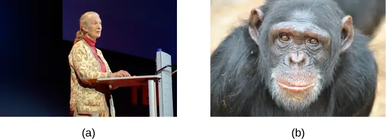
The greatest benefit of naturalistic observation is the validity, or accuracy, of information collected unobtrusively in a natural setting. Having individuals behave as they normally would in a given situation means that we have a higher degree of ecological validity, or realism, than we might achieve with other research approaches. Therefore, our ability to generalize the findings of the research to real-world situations is enhanced. If done correctly, we need not worry about people or animals modifying their behavior simply because they are being observed. Sometimes, people may assume that reality programs give us a glimpse into authentic human behavior. However, the principle of inconspicuous observation is violated as reality stars are followed by camera crews and are interviewed on camera for personal confessionals. Given that environment, we must doubt how natural and realistic their behaviors are.
The major downside of naturalistic observation is that they are often difficult to set up and control. In our restroom study, what if you stood in the restroom all day prepared to record people’s hand washing behavior and no one came in? Or, what if you have been closely observing a troop of gorillas for weeks only to find that they migrated to a new place while you were sleeping in your tent? The benefit of realistic data comes at a cost. As a researcher you have no control of when (or if) you have behavior to observe. In addition, this type of observational research often requires significant investments of time, money, and a good dose of luck.
Sometimes studies involve structured observation. In these cases, people are observed while engaging in set, specific tasks. An excellent example of structured observation comes from Strange Situation by Mary Ainsworth (you will read more about this in the chapter on lifespan development). The Strange Situation is a procedure used to evaluate attachment styles that exist between an infant and caregiver. In this scenario, caregivers bring their infants into a room filled with toys. The Strange Situation involves a number of phases, including a stranger coming into the room, the caregiver leaving the room, and the caregiver’s return to the room. The infant’s behavior is closely monitored at each phase, but it is the behavior of the infant upon being reunited with the caregiver that is most telling in terms of characterizing the infant’s attachment style with the caregiver.
Another potential problem in observational research is observer bias. Generally, people who act as observers are closely involved in the research project and may unconsciously skew their observations to fit their research goals or expectations. To protect against this type of bias, researchers should have clear criteria established for the types of behaviors recorded and how those behaviors should be classified. In addition, researchers often compare observations of the same event by multiple observers, in order to test inter-rater reliability: a measure of reliability that assesses the consistency of observations by different observers.
Surveys¶
Often, psychologists develop surveys as a means of gathering data. Surveys are lists of questions to be answered by research participants, and can be delivered as paper-and-pencil questionnaires, administered electronically, or conducted verbally (Figure 2.9). Generally, the survey itself can be completed in a short time, and the ease of administering a survey makes it easy to collect data from a large number of people.
Surveys allow researchers to gather data from larger samples than may be afforded by other research methods. A sample is a subset of individuals selected from a population, which is the overall group of individuals that the researchers are interested in. Researchers study the sample and seek to generalize their findings to the population. Generally, researchers will begin this process by calculating various measures of central tendency from the data they have collected. These measures provide an overall summary of what a typical response looks like. There are three measures of central tendency: mode, median, and mean. The mode is the most frequently occurring response, the median lies at the middle of a given data set, and the mean is the arithmetic average of all data points. Means tend to be most useful in conducting additional analyses like those described below; however, means are very sensitive to the effects of outliers, and so one must be aware of those effects when making assessments of what measures of central tendency tell us about a data set in question.
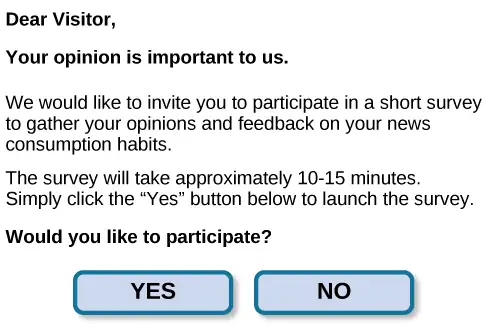
There is both strength and weakness of the survey in comparison to case studies. By using surveys, we can collect information from a larger sample of people. A larger sample is better able to reflect the actual diversity of the population, thus allowing better generalizability. Therefore, if our sample is sufficiently large and diverse, we can assume that the data we collect from the survey can be generalized to the larger population with more certainty than the information collected through a case study. However, given the greater number of people involved, we are not able to collect the same depth of information on each person that would be collected in a case study.
Another potential weakness of surveys is something we touched on earlier in this chapter: People don't always give accurate responses. They may lie, misremember, or answer questions in a way that they think makes them look good. For example, people may report drinking less alcohol than is actually the case.
Any number of research questions can be answered through the use of surveys. One real-world example is the research conducted by Jenkins, Ruppel, Kizer, Yehl, and Griffin (2012) about the backlash against the US Arab-American community following the terrorist attacks of September 11, 2001. Jenkins and colleagues wanted to determine to what extent these negative attitudes toward Arab-Americans still existed nearly a decade after the attacks occurred. In one study, 140 research participants filled out a survey with 10 questions, including questions asking directly about the participant’s overt prejudicial attitudes toward people of various ethnicities. The survey also asked indirect questions about how likely the participant would be to interact with a person of a given ethnicity in a variety of settings (such as, “How likely do you think it is that you would introduce yourself to a person of Arab-American descent?”). The results of the research suggested that participants were unwilling to report prejudicial attitudes toward any ethnic group. However, there were significant differences between their pattern of responses to questions about social interaction with Arab-Americans compared to other ethnic groups: they indicated less willingness for social interaction with Arab-Americans compared to the other ethnic groups. This suggested that the participants harbored subtle forms of prejudice against Arab-Americans, despite their assertions that this was not the case (Jenkins et al., 2012).
Archival Research¶
Some researchers gain access to large amounts of data without interacting with a single research participant. Instead, they use existing records to answer various research questions. This type of research approach is known as archival research. Archival research relies on looking at past records or data sets to look for interesting patterns or relationships.
For example, a researcher might access the academic records of all individuals who enrolled in college within the past ten years and calculate how long it took them to complete their degrees, as well as course loads, grades, and extracurricular involvement. Archival research could provide important information about who is most likely to complete their education, and it could help identify important risk factors for struggling students (Figure 2.10).
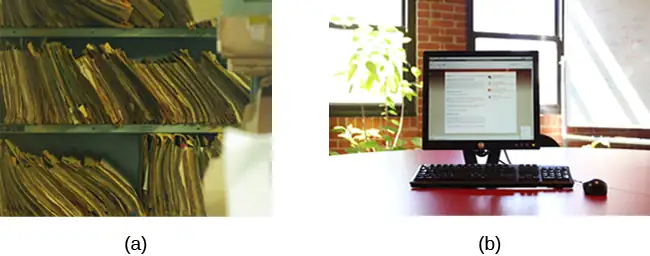
In comparing archival research to other research methods, there are several important distinctions. For one, the researcher employing archival research never directly interacts with research participants. Therefore, the investment of time and money to collect data is considerably less with archival research. Additionally, researchers have no control over what information was originally collected. Therefore, research questions have to be tailored so they can be answered within the structure of the existing data sets. There is also no guarantee of consistency between the records from one source to another, which might make comparing and contrasting different data sets problematic.
Longitudinal and Cross-Sectional Research¶
Sometimes we want to see how people change over time, as in studies of human development and lifespan. When we test the same group of individuals repeatedly over an extended period of time, we are conducting longitudinal research. Longitudinal research is a research design in which data-gathering is administered repeatedly over an extended period of time. For example, we may survey a group of individuals about their dietary habits at age 20, retest them a decade later at age 30, and then again at age 40.
Another approach is cross-sectional research. In cross-sectional research, a researcher compares multiple segments of the population at the same time. Using the dietary habits example above, the researcher might directly compare different groups of people by age. Instead of studying a group of people for 20 years to see how their dietary habits changed from decade to decade, the researcher would study a group of 20-year-old individuals and compare them to a group of 30-year-old individuals and a group of 40-year-old individuals. While cross-sectional research requires a shorter-term investment, it is also limited by differences that exist between the different generations (or cohorts) that have nothing to do with age per se, but rather reflect the social and cultural experiences of different generations of individuals that make them different from one another.
To illustrate this concept, consider the following survey findings. In recent years there has been significant growth in the popular support of same-sex marriage. Many studies on this topic break down survey participants into different age groups. In general, younger people are more supportive of same-sex marriage than are those who are older (Jones, 2013). Does this mean that as we age we become less open to the idea of same-sex marriage, or does this mean that older individuals have different perspectives because of the social climates in which they grew up? Longitudinal research is a powerful approach because the same individuals are involved in the research project over time, which means that the researchers need to be less concerned with differences among cohorts affecting the results of their study.
Often longitudinal studies are employed when researching various diseases in an effort to understand particular risk factors. Such studies often involve tens of thousands of individuals who are followed for several decades. Given the enormous number of people involved in these studies, researchers can feel confident that their findings can be generalized to the larger population. The Cancer Prevention Study-3 (CPS-3) is one of a series of longitudinal studies sponsored by the American Cancer Society aimed at determining predictive risk factors associated with cancer. When participants enter the study, they complete a survey about their lives and family histories, providing information on factors that might cause or prevent the development of cancer. Then every few years the participants receive additional surveys to complete. In the end, hundreds of thousands of participants will be tracked over 20 years to determine which of them develop cancer and which do not.
Clearly, this type of research is important and potentially very informative. For instance, earlier longitudinal studies sponsored by the American Cancer Society provided some of the first scientific demonstrations of the now well-established links between increased rates of cancer and smoking (American Cancer Society, n.d.) (Figure 2.11).
As with any research strategy, longitudinal research is not without limitations. For one, these studies require an incredible time investment by the researcher and research participants. Given that some longitudinal studies take years, if not decades, to complete, the results will not be known for a considerable period of time. In addition to the time demands, these studies also require a substantial financial investment. Many researchers are unable to commit the resources necessary to see a longitudinal project through to the end.
Research participants must also be willing to continue their participation for an extended period of time, and this can be problematic. People move, get married and take new names, get ill, and eventually die. Even without significant life changes, some people may simply choose to discontinue their participation in the project. As a result, the attrition rates, or reduction in the number of research participants due to dropouts, in longitudinal studies are quite high and increase over the course of a project. For this reason, researchers using this approach typically recruit many participants fully expecting that a substantial number will drop out before the end. As the study progresses, they continually check whether the sample still represents the larger population, and make adjustments as necessary.
2.3 Analyzing Findings¶
Learning Objectives
By the end of this section, you will be able to:
- Explain what a correlation coefficient tells us about the relationship between variables
- Recognize that correlation does not indicate a cause-and-effect relationship between variables
- Discuss our tendency to look for relationships between variables that do not really exist
- Explain random sampling and assignment of participants into experimental and control groups
- Discuss how experimenter or participant bias could affect the results of an experiment
- Identify independent and dependent variables
Did you know that as sales in ice cream increase, so does the overall rate of crime? Is it possible that indulging in your favorite flavor of ice cream could send you on a crime spree? Or, after committing crime do you think you might decide to treat yourself to a cone? There is no question that a relationship exists between ice cream and crime (e.g., Harper, 2013), but it would be pretty foolish to decide that one thing actually caused the other to occur.
It is much more likely that both ice cream sales and crime rates are related to the temperature outside. When the temperature is warm, there are lots of people out of their houses, interacting with each other, getting annoyed with one another, and sometimes committing crimes. Also, when it is warm outside, we are more likely to seek a cool treat like ice cream. How do we determine if there is indeed a relationship between two things? And when there is a relationship, how can we discern whether it is attributable to coincidence or causation?
Correlational Research¶
Correlation means that there is a relationship between two or more variables (such as ice cream consumption and crime), but this relationship does not necessarily imply cause and effect. When two variables are correlated, it simply means that as one variable changes, so does the other. We can measure correlation by calculating a statistic known as a correlation coefficient. A correlation coefficient is a number from -1 to +1 that indicates the strength and direction of the relationship between variables. The correlation coefficient is usually represented by the letter r.
The number portion of the correlation coefficient indicates the strength of the relationship. The closer the number is to 1 (be it negative or positive), the more strongly related the variables are, and the more predictable changes in one variable will be as the other variable changes. The closer the number is to zero, the weaker the relationship, and the less predictable the relationship between the variables becomes. For instance, a correlation coefficient of 0.9 indicates a far stronger relationship than a correlation coefficient of 0.3. If the variables are not related to one another at all, the correlation coefficient is 0. The example above about ice cream and crime is an example of two variables that we might expect to have no relationship to each other.
The sign—positive or negative—of the correlation coefficient indicates the direction of the relationship (Figure 2.12). A positive correlation means that the variables move in the same direction. Put another way, it means that as one variable increases so does the other, and conversely, when one variable decreases so does the other. A negative correlation means that the variables move in opposite directions. If two variables are negatively correlated, a decrease in one variable is associated with an increase in the other and vice versa.
The example of ice cream and crime rates is a positive correlation because both variables increase when temperatures are warmer. Other examples of positive correlations are the relationship between an individual’s height and weight or the relationship between a person’s age and number of wrinkles. One might expect a negative correlation to exist between someone’s tiredness during the day and the number of hours they slept the previous night: the amount of sleep decreases as the feelings of tiredness increase. In a real-world example of negative correlation, student researchers at the University of Minnesota found a weak negative correlation (r = -0.29) between the average number of days per week that students got fewer than 5 hours of sleep and their GPA (Lowry, Dean, & Manders, 2010). Keep in mind that a negative correlation is not the same as no correlation. For example, we would probably find no correlation between hours of sleep and shoe size.
As mentioned earlier, correlations have predictive value. Imagine that you are on the admissions committee of a major university. You are faced with a huge number of applications, but you are able to accommodate only a small percentage of the applicant pool. How might you decide who should be admitted? You might try to correlate your current students’ college GPA with their scores on standardized tests like the SAT or ACT. By observing which correlations were strongest for your current students, you could use this information to predict relative success of those students who have applied for admission into the university.
![Three scatterplots are shown. Scatterplot (a) is labeled “positive correlation” and shows scattered dots forming a rough line from the bottom left to the top right; the x-axis is labeled “weight” and the y-axis is labeled “height.” Scatterplot (b) is labeled “negative correlation” and shows scattered dots forming a rough line from the top left to the bottom right; the x-axis is labeled “tiredness” and the y-axis is labeled “hours of sleep.” Scatterplot (c) is labeled “no correlation” and shows scattered dots having no pattern; the x-axis is labeled “shoe size” and the y-axis is labeled “hours of sleep.”](img/cnx-psych-02-04-scatter.webp)
Link to Learning
Manipulate this interactive scatterplot to practice your understanding of positive and negative correlation.
Correlation Does Not Indicate Causation¶
Correlational research is useful because it allows us to discover the strength and direction of relationships that exist between two variables. However, correlation is limited because establishing the existence of a relationship tells us little about cause and effect. While variables are sometimes correlated because one does cause the other, it could also be that some other factor, a confounding variable, is actually causing the systematic movement in our variables of interest. In the ice cream/crime rate example mentioned earlier, temperature is a confounding variable that could account for the relationship between the two variables.
Even when we cannot point to clear confounding variables, we should not assume that a correlation between two variables implies that one variable causes changes in another. This can be frustrating when a cause-and-effect relationship seems clear and intuitive. Think back to our discussion of the research done by the American Cancer Society and how their research projects were some of the first demonstrations of the link between smoking and cancer. It seems reasonable to assume that smoking causes cancer, but if we were limited to correlational research, we would be overstepping our bounds by making this assumption.
Unfortunately, people mistakenly make claims of causation as a function of correlations all the time. Such claims are especially common in advertisements and news stories. For example, research found that people who eat certain breakfast cereal may have a reduced risk of heart disease (Anderson, Hanna, Peng, & Kryscio, 2000). Cereal companies are likely to share this information in a way that maximizes and perhaps overstates the positive aspects of eating cereal. But does cereal really cause better health, or are there other possible explanations for the health of those who eat cereal? While correlational research is invaluable in identifying relationships among variables, a major limitation is the inability to establish causality. Psychologists want to make statements about cause and effect, but the only way to do that is to conduct an experiment to answer a research question. The next section describes how scientific experiments incorporate methods that eliminate, or control for, alternative explanations, which allow researchers to explore how changes in one variable cause changes in another variable.
Illusory Correlations¶
The temptation to make erroneous cause-and-effect statements based on correlational research is not the only way we tend to misinterpret data. We also tend to make the mistake of illusory correlations, especially with unsystematic observations. Illusory correlations, or false correlations, occur when people believe that relationships exist between two things when no such relationship exists. One well-known illusory correlation is the supposed effect that the moon’s phases have on human behavior. Many people passionately assert that human behavior is affected by the phase of the moon, and specifically, that people act strangely when the moon is full (Figure 2.14).
There is no denying that the moon exerts a powerful influence on our planet. The ebb and flow of the ocean’s tides are tightly tied to the gravitational forces of the moon. Many people believe, therefore, that it is logical that we are affected by the moon as well. After all, our bodies are largely made up of water. A meta-analysis of nearly 40 studies consistently demonstrated, however, that the relationship between the moon and our behavior does not exist (Rotton & Kelly, 1985). While we may pay more attention to odd behavior during the full phase of the moon, the rates of odd behavior remain constant throughout the lunar cycle.
Why are we so apt to believe in illusory correlations like this? Often we read or hear about them and simply accept the information as valid. Or, we have a hunch about how something works and then look for evidence to support that hunch, ignoring evidence that would tell us our hunch is false; this is known as confirmation bias. Other times, we find illusory correlations based on the information that comes most easily to mind, even if that information is severely limited. And while we may feel confident that we can use these relationships to better understand and predict the world around us, illusory correlations can have significant drawbacks. For example, research suggests that illusory correlations—in which certain behaviors are inaccurately attributed to certain groups—are involved in the formation of prejudicial attitudes that can ultimately lead to discriminatory behavior (Fiedler, 2004).
Causality: Conducting Experiments and Using the Data¶
As you’ve learned, the only way to establish that there is a cause-and-effect relationship between two variables is to conduct a scientific experiment. Experiment has a different meaning in the scientific context than in everyday life. In everyday conversation, we often use it to describe trying something for the first time, such as experimenting with a new hair style or a new food. However, in the scientific context, an experiment has precise requirements for design and implementation.
The Experimental Hypothesis¶
In order to conduct an experiment, a researcher must have a specific hypothesis to be tested. As you’ve learned, hypotheses can be formulated either through direct observation of the real world or after careful review of previous research. For example, if you think that the use of technology in the classroom has negative impacts on learning, then you have basically formulated a hypothesis—namely, that the use of technology in the classroom should be limited because it decreases learning. How might you have arrived at this particular hypothesis? You may have noticed that your classmates who take notes on their laptops perform at lower levels on class exams than those who take notes by hand, or those who receive a lesson via a computer program versus via an in-person teacher have different levels of performance when tested (Figure 2.15).
These sorts of personal observations are what often lead us to formulate a specific hypothesis, but we cannot use limited personal observations and anecdotal evidence to rigorously test our hypothesis. Instead, to find out if real-world data supports our hypothesis, we have to conduct an experiment.
Designing an Experiment¶
The most basic experimental design involves two groups: the experimental group and the control group. The two groups are designed to be the same except for one difference— experimental manipulation. The experimental group gets the experimental manipulation—that is, the treatment or variable being tested (in this case, the use of technology)—and the control group does not. Since experimental manipulation is the only difference between the experimental and control groups, we can be sure that any differences between the two are due to experimental manipulation rather than chance.
In our example of how the use of technology should be limited in the classroom, we have the experimental group learn algebra using a computer program and then test their learning. We measure the learning in our control group after they are taught algebra by a teacher in a traditional classroom. It is important for the control group to be treated similarly to the experimental group, with the exception that the control group does not receive the experimental manipulation.
We also need to precisely define, or operationalize, how we measure learning of algebra. An operational definition is a precise description of our variables, and it is important in allowing others to understand exactly how and what a researcher measures in a particular experiment. In operationalizing learning, we might choose to look at performance on a test covering the material on which the individuals were taught by the teacher or the computer program. We might also ask our participants to summarize the information that was just presented in some way. Whatever we determine, it is important that we operationalize learning in such a way that anyone who hears about our study for the first time knows exactly what we mean by learning. This aids peoples’ ability to interpret our data as well as their capacity to repeat our experiment should they choose to do so.
Once we have operationalized what is considered use of technology and what is considered learning in our experiment participants, we need to establish how we will run our experiment. In this case, we might have participants spend 45 minutes learning algebra (either through a computer program or with an in-person math teacher) and then give them a test on the material covered during the 45 minutes.
Ideally, the people who score the tests are unaware of who was assigned to the experimental or control group, in order to control for experimenter bias. Experimenter bias refers to the possibility that a researcher’s expectations might skew the results of the study. Remember, conducting an experiment requires a lot of planning, and the people involved in the research project have a vested interest in supporting their hypotheses. If the observers knew which child was in which group, it might influence how they interpret ambiguous responses, such as sloppy handwriting or minor computational mistakes. By being blind to which child is in which group, we protect against those biases. This situation is a single-blind study, meaning that one of the groups (participants) are unaware as to which group they are in (experiment or control group) while the researcher who developed the experiment knows which participants are in each group.
In a double-blind study, both the researchers and the participants are blind to group assignments. Why would a researcher want to run a study where no one knows who is in which group? Because by doing so, we can control for both experimenter and participant expectations. If you are familiar with the phrase placebo effect, you already have some idea as to why this is an important consideration. The placebo effect occurs when people's expectations or beliefs influence or determine their experience in a given situation. In other words, simply expecting something to happen can actually make it happen.
The placebo effect is commonly described in terms of testing the effectiveness of a new medication. Imagine that you work in a pharmaceutical company, and you think you have a new drug that is effective in treating depression. To demonstrate that your medication is effective, you run an experiment with two groups: The experimental group receives the medication, and the control group does not. But you don’t want participants to know whether they received the drug or not.
Why is that? Imagine that you are a participant in this study, and you have just taken a pill that you think will improve your mood. Because you expect the pill to have an effect, you might feel better simply because you took the pill and not because of any drug actually contained in the pill—this is the placebo effect.
To make sure that any effects on mood are due to the drug and not due to expectations, the control group receives a placebo (in this case a sugar pill). Now everyone gets a pill, and once again neither the researcher nor the experimental participants know who got the drug and who got the sugar pill. Any differences in mood between the experimental and control groups can now be attributed to the drug itself rather than to experimenter bias or participant expectations (Figure 2.16).
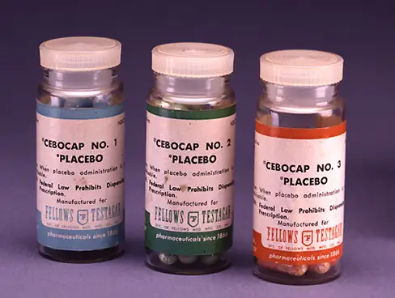
Independent and Dependent Variables¶
In a research experiment, we strive to study whether changes in one thing cause changes in another. To achieve this, we must pay attention to two important variables, or things that can be changed, in any experimental study: the independent variable and the dependent variable. An independent variable is manipulated or controlled by the experimenter. In a well-designed experimental study, the independent variable is the only important difference between the experimental and control groups. In our example of how technology use in the classroom affects learning, the independent variable is the type of learning by participants in the study (Figure 2.17). A dependent variable is what the researcher measures to see how much effect the independent variable had. In our example, the dependent variable is the learning exhibited by our participants.
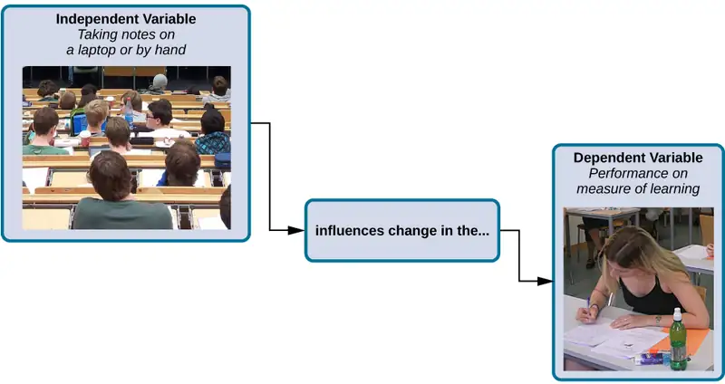
We expect that the dependent variable will change as a function of the independent variable. In other words, the dependent variable depends on the independent variable. A good way to think about the relationship between the independent and dependent variables is with this question: What effect does the independent variable have on the dependent variable? Returning to our example, what is the effect of being taught a lesson through a computer program versus through an in-person instructor?
Selecting and Assigning Experimental Participants¶
Now that our study is designed, we need to obtain a sample of individuals to include in our experiment. Our study involves human participants so we need to determine whom to include. Participants are the subjects of psychological research, and as the name implies, individuals who are involved in psychological research actively participate in the process. Often, psychological research projects rely on college students to serve as participants. In fact, the vast majority of research in psychology subfields has historically involved students as research participants (Sears, 1986; Arnett, 2008). But are college students truly representative of the general population? College students tend to be younger, more educated, more liberal, and less diverse than the general population. Although using students as test subjects is an accepted practice, relying on such a limited pool of research participants can be problematic because it is difficult to generalize findings to the larger population.
Our hypothetical experiment involves high school students, and we must first generate a sample of students. Samples are used because populations are usually too large to reasonably involve every member in our particular experiment (Figure 2.18). If possible, we should use a random sample (there are other types of samples, but for the purposes of this chapter, we will focus on random samples). A random sample is a subset of a larger population in which every member of the population has an equal chance of being selected. Random samples are preferred because if the sample is large enough we can be reasonably sure that the participating individuals are representative of the larger population. This means that the percentages of characteristics in the sample—sex, ethnicity, socioeconomic level, and any other characteristics that might affect the results—are close to those percentages in the larger population.
In our example, let’s say we decide our population of interest is algebra students. But all algebra students is a very large population, so we need to be more specific; instead we might say our population of interest is all algebra students in a particular city. We should include students from various income brackets, family situations, races, ethnicities, religions, and geographic areas of town. With this more manageable population, we can work with the local schools in selecting a random sample of around 200 algebra students who we want to participate in our experiment.
In summary, because we cannot test all of the algebra students in a city, we want to find a group of about 200 that reflects the composition of that city. With a representative group, we can generalize our findings to the larger population without fear of our sample being biased in some way.
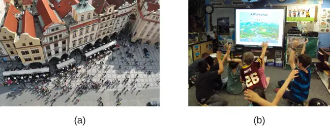
Now that we have a sample, the next step of the experimental process is to split the participants into experimental and control groups through random assignment. With random assignment, all participants have an equal chance of being assigned to either group. There is statistical software that will randomly assign each of the algebra students in the sample to either the experimental or the control group.
Random assignment is critical for sound experimental design. With sufficiently large samples, random assignment makes it unlikely that there are systematic differences between the groups. So, for instance, it would be very unlikely that we would get one group composed entirely of males, a given ethnic identity, or a given religious ideology. This is important because if the groups were systematically different before the experiment began, we would not know the origin of any differences we find between the groups: Were the differences preexisting, or were they caused by manipulation of the independent variable? Random assignment allows us to assume that any differences observed between experimental and control groups result from the manipulation of the independent variable.
Link to Learning
Use this online random number generator to learn more about random sampling and assignments.
Issues to Consider¶
While experiments allow scientists to make cause-and-effect claims, they are not without problems. True experiments require the experimenter to manipulate an independent variable, and that can complicate many questions that psychologists might want to address. For instance, imagine that you want to know what effect sex (the independent variable) has on spatial memory (the dependent variable). Although you can certainly look for differences between males and females on a task that taps into spatial memory, you cannot directly control a person’s sex. We categorize this type of research approach as quasi-experimental and recognize that we cannot make cause-and-effect claims in these circumstances.
Experimenters are also limited by ethical constraints. For instance, you would not be able to conduct an experiment designed to determine if experiencing abuse as a child leads to lower levels of self-esteem among adults. To conduct such an experiment, you would need to randomly assign some experimental participants to a group that receives abuse, and that experiment would be unethical.
Interpreting Experimental Findings¶
Once data is collected from both the experimental and the control groups, a statistical analysis is conducted to find out if there are meaningful differences between the two groups. A statistical analysis determines how likely it is that any difference found is due to chance (and thus not meaningful). For example, if an experiment is done on the effectiveness of a nutritional supplement, and those taking a placebo pill (and not the supplement) have the same result as those taking the supplement, then the experiment has shown that the nutritional supplement is not effective. Generally, psychologists consider differences to be statistically significant if there is less than a five percent chance of observing them if the groups did not actually differ from one another. Stated another way, psychologists want to limit the chances of making “false positive” claims to five percent or less.
The greatest strength of experiments is the ability to assert that any significant differences in the findings are caused by the independent variable. This occurs because random selection, random assignment, and a design that limits the effects of both experimenter bias and participant expectancy should create groups that are similar in composition and treatment. Therefore, any difference between the groups is attributable to the independent variable, and now we can finally make a causal statement. If we find that watching a violent television program results in more violent behavior than watching a nonviolent program, we can safely say that watching violent television programs causes an increase in the display of violent behavior.
Reporting Research¶
When psychologists complete a research project, they generally want to share their findings with other scientists. The American Psychological Association (APA) publishes a manual detailing how to write a paper for submission to scientific journals. Unlike an article that might be published in a magazine like Psychology Today, which targets a general audience with an interest in psychology, scientific journals generally publish peer-reviewed journal articles aimed at an audience of professionals and scholars who are actively involved in research themselves.
Link to Learning
The Online Writing Lab (OWL) at Purdue University can walk you through the APA writing guidelines.
A peer-reviewed journal article is read by several other scientists (generally anonymously) with expertise in the subject matter. These peer reviewers provide feedback—to both the author and the journal editor—regarding the quality of the draft. Peer reviewers look for a strong rationale for the research being described, a clear description of how the research was conducted, and evidence that the research was conducted in an ethical manner. They also look for flaws in the study's design, methods, and statistical analyses. They check that the conclusions drawn by the authors seem reasonable given the observations made during the research. Peer reviewers also comment on how valuable the research is in advancing the discipline’s knowledge. This helps prevent unnecessary duplication of research findings in the scientific literature and, to some extent, ensures that each research article provides new information. Ultimately, the journal editor will compile all of the peer reviewer feedback and determine whether the article will be published in its current state (a rare occurrence), published with revisions, or not accepted for publication.
Peer review provides some degree of quality control for psychological research. Poorly conceived or executed studies can be weeded out, and even well-designed research can be improved by the revisions suggested. Peer review also ensures that the research is described clearly enough to allow other scientists to replicate it, meaning they can repeat the experiment using different samples to determine reliability. Sometimes replications involve additional measures that expand on the original finding. In any case, each replication serves to provide more evidence to support the original research findings. Successful replications of published research make scientists more apt to adopt those findings, while repeated failures tend to cast doubt on the legitimacy of the original article and lead scientists to look elsewhere. For example, it would be a major advancement in the medical field if a published study indicated that taking a new drug helped individuals achieve better health without changing their behavior. But if other scientists could not replicate the results, the original study’s claims would be questioned.
In recent years, there has been increasing concern about a “replication crisis” that has affected a number of scientific fields, including psychology. Some of the most well-known studies and scientists have produced research that has failed to be replicated by others (as discussed in Shrout & Rodgers, 2018). In fact, even a famous Nobel Prize-winning scientist has recently retracted a published paper because she had difficulty replicating her results (Nobel Prize-winning scientist Frances Arnold retracts paper, 2020 January 3). These kinds of outcomes have prompted some scientists to begin to work together and more openly, and some would argue that the current “crisis” is actually improving the ways in which science is conducted and in how its results are shared with others (Aschwanden, 2018).
Dig Deeper: The Vaccine-Autism Myth and Retraction of Published Studies
Some scientists have claimed that routine childhood vaccines cause some children to develop autism, and, in fact, several peer-reviewed publications published research making these claims. Since the initial reports, large-scale epidemiological research has indicated that vaccinations are not responsible for causing autism and that it is much safer to have your child vaccinated than not. Furthermore, several of the original studies making this claim have since been retracted.
A published piece of work can be rescinded when data is called into question because of falsification, fabrication, or serious research design problems. Once rescinded, the scientific community is informed that there are serious problems with the original publication. Retractions can be initiated by the researcher who led the study, by research collaborators, by the institution that employed the researcher, or by the editorial board of the journal in which the article was originally published. In the vaccine-autism case, the retraction was made because of a significant conflict of interest in which the leading researcher had a financial interest in establishing a link between childhood vaccines and autism (Offit, 2008). Unfortunately, the initial studies received so much media attention that many parents around the world became hesitant to have their children vaccinated (Figure 2.19). Continued reliance on such debunked studies has significant consequences. For instance, between January and October of 2019, there were 22 measles outbreaks across the United States and more than a thousand cases of individuals contracting measles (Patel et al., 2019). This is likely due to the anti-vaccination movements that have risen from the debunked research. For more information about how the vaccine/autism story unfolded, as well as the repercussions of this story, take a look at Paul Offit’s book, Autism’s False Prophets: Bad Science, Risky Medicine, and the Search for a Cure.
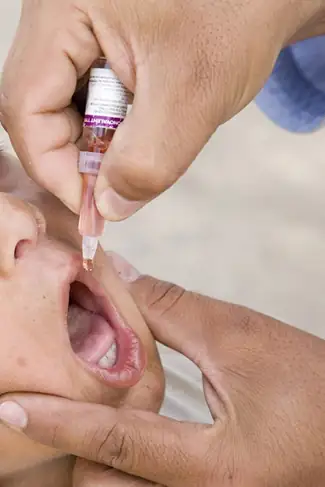
Reliability and Validity¶
Reliability and validity are two important considerations that must be made with any type of data collection. Reliability refers to the ability to consistently produce a given result. In the context of psychological research, this would mean that any instruments or tools used to collect data do so in consistent, reproducible ways. There are a number of different types of reliability. Some of these include inter-rater reliability (the degree to which two or more different observers agree on what has been observed), internal consistency (the degree to which different items on a survey that measure the same thing correlate with one another), and test-retest reliability (the degree to which the outcomes of a particular measure remain consistent over multiple administrations).
Unfortunately, being consistent in measurement does not necessarily mean that you have measured something correctly. To illustrate this concept, consider a kitchen scale that would be used to measure the weight of cereal that you eat in the morning. If the scale is not properly calibrated, it may consistently under- or overestimate the amount of cereal that’s being measured. While the scale is highly reliable in producing consistent results (e.g., the same amount of cereal poured onto the scale produces the same reading each time), those results are incorrect. This is where validity comes into play. Validity refers to the extent to which a given instrument or tool accurately measures what it’s supposed to measure, and once again, there are a number of ways in which validity can be expressed. Ecological validity (the degree to which research results generalize to real-world applications), construct validity (the degree to which a given variable actually captures or measures what it is intended to measure), and face validity (the degree to which a given variable seems valid on the surface) are just a few types that researchers consider. While any valid measure is by necessity reliable, the reverse is not necessarily true. Researchers strive to use instruments that are both highly reliable and valid.
Everyday Connection: How Valid Are the SAT and ACT?
Standardized tests like the SAT and ACT are supposed to measure an individual’s aptitude for a college education, but how reliable and valid are such tests? Research conducted by the College Board suggests that scores on the SAT have high predictive validity for first-year college students’ GPA (Kobrin, Patterson, Shaw, Mattern, & Barbuti, 2008). In this context, predictive validity refers to the test’s ability to effectively predict the GPA of college freshmen. Given that many institutions of higher education require the SAT or ACT for admission, this high degree of predictive validity might be comforting.
However, the emphasis placed on SAT or ACT scores in college admissions is changing based on a number of factors. For one, some researchers assert that these tests are biased, and students from historically marginalized populations are at a disadvantage that unfairly reduces the likelihood of being admitted into a college (Santelices & Wilson, 2010). Additionally, some research has suggested that the predictive validity of these tests is grossly exaggerated in how well they are able to predict the GPA of first-year college students. In fact, it has been suggested that the SAT’s predictive validity may be overestimated by as much as 150% (Rothstein, 2004). Many institutions of higher education are beginning to consider de-emphasizing the significance of SAT scores in making admission decisions (Rimer, 2008).
Recent examples of high profile cheating scandals both domestically and abroad have only increased the scrutiny being placed on these types of tests, and as of March 2019, more than 1000 institutions of higher education have either relaxed or eliminated the requirements for SAT or ACT testing for admissions (Strauss, 2019, March 19).
2.4 Ethics¶
Learning Objectives
By the end of this section, you will be able to:
- Discuss how research involving human subjects is regulated
- Summarize the processes of informed consent and debriefing
- Explain how research involving animal subjects is regulated
Today, scientists agree that good research is ethical in nature and is guided by a basic respect for human dignity and safety. However, as you will read in the feature box, this has not always been the case. Modern researchers must demonstrate that the research they perform is ethically sound. This section presents how ethical considerations affect the design and implementation of research conducted today.
Research Involving Human Participants¶
Any experiment involving the participation of human subjects is governed by extensive, strict guidelines designed to ensure that the experiment does not result in harm. Any research institution that receives federal support for research involving human participants must have access to an institutional review board (IRB). The IRB is a committee of individuals often made up of members of the institution’s administration, scientists, and community members (Figure 2.20). The purpose of the IRB is to review proposals for research that involves human participants. The IRB reviews these proposals with the principles mentioned above in mind, and generally, approval from the IRB is required in order for the experiment to proceed.
An institution’s IRB requires several components in any experiment it approves. For one, each participant must sign an informed consent form before they can participate in the experiment. An informed consent form provides a written description of what participants can expect during the experiment, including potential risks and implications of the research. It also lets participants know that their involvement is completely voluntary and can be discontinued without penalty at any time. Furthermore, the informed consent guarantees that any data collected in the experiment will remain completely confidential. In cases where research participants are under the age of 18, the parents or legal guardians are required to sign the informed consent form.
Link to Learning
View this example of a consent form to learn more.
While the informed consent form should be as honest as possible in describing exactly what participants will be doing, sometimes deception is necessary to prevent participants’ knowledge of the exact research question from affecting the results of the study. Deception involves purposely misleading experiment participants in order to maintain the integrity of the experiment, but not to the point where the deception could be considered harmful. For example, if we are interested in how our opinion of someone is affected by their attire, we might use deception in describing the experiment to prevent that knowledge from affecting participants’ responses. In cases where deception is involved, participants must receive a full debriefing upon conclusion of the study—complete, honest information about the purpose of the experiment, how the data collected will be used, the reasons why deception was necessary, and information about how to obtain additional information about the study.
Dig Deeper: Ethics and the Tuskegee Syphilis Study
Unfortunately, the ethical guidelines that exist for research today were not always applied in the past. In 1932, rural, Black men from Tuskegee, Alabama, were recruited to participate in an experiment conducted by the U.S. Public Health Service, with the aim of studying syphilis in Black men (Figure 2.21). In exchange for free medical care, meals, and burial insurance, 600 men agreed to participate in the study. A little more than half of the men tested positive for syphilis, and they served as the experimental group (given that the researchers could not randomly assign participants to groups, this represents a quasi-experiment). The remaining syphilis-free individuals served as the control group. However, those individuals that tested positive for syphilis were never informed that they had the disease.
While there was no treatment for syphilis when the study began, by 1947 penicillin was recognized as an effective treatment for the disease. Despite this, no penicillin was administered to the participants in this study, and the participants were not allowed to seek treatment at any other facilities if they continued in the study. Over the course of 40 years, many of the participants unknowingly spread syphilis to their wives (and subsequently their children born from their wives) and eventually died because they never received treatment for the disease. This study was discontinued in 1972 when the experiment was discovered by the national press (Tuskegee University, n.d.). The resulting outrage over the experiment led directly to the National Research Act of 1974 and the strict ethical guidelines for research on humans described in this chapter. Why is this study unethical? How were the men who participated and their families harmed as a function of this research?
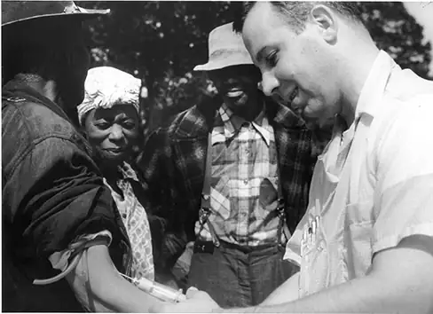
Link to Learning
Visit this website about the Tuskegee Syphilis Study to learn more.
Research Involving Animal Subjects¶
Many psychologists conduct research involving animal subjects. Often, these researchers use rodents (Figure 2.22) or birds as the subjects of their experiments—the APA estimates that 90% of all animal research in psychology uses these species (American Psychological Association, n.d.). Because many basic processes in animals are sufficiently similar to those in humans, these animals are acceptable substitutes for research that would be considered unethical in human participants.
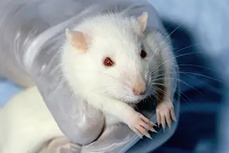
This does not mean that animal researchers are immune to ethical concerns. Indeed, the humane and ethical treatment of animal research subjects is a critical aspect of this type of research. Researchers must design their experiments to minimize any pain or distress experienced by animals serving as research subjects.
Whereas IRBs review research proposals that involve human participants, animal experimental proposals are reviewed by an Institutional Animal Care and Use Committee (IACUC). An IACUC consists of institutional administrators, scientists, veterinarians, and community members. This committee is charged with ensuring that all experimental proposals require the humane treatment of animal research subjects. It also conducts semi-annual inspections of all animal facilities to ensure that the research protocols are being followed. No animal research project can proceed without the committee’s approval.
Chapter Review¶
Key Terms¶
- archival research
- method of research using past records or data sets to answer various research questions, or to search for interesting patterns or relationships
- attrition
- reduction in number of research participants as some drop out of the study over time
- cause-and-effect relationship
- changes in one variable cause the changes in the other variable; can be determined only through an experimental research design
- clinical or case study
- observational research study focusing on one or a few people
- confirmation bias
- tendency to ignore evidence that disproves ideas or beliefs
- confounding variable
- unanticipated outside factor that affects both variables of interest, often giving the false impression that changes in one variable causes changes in the other variable, when, in actuality, the outside factor causes changes in both variables
- control group
- serves as a basis for comparison and controls for chance factors that might influence the results of the study—by holding such factors constant across groups so that the experimental manipulation is the only difference between groups
- correlation
- relationship between two or more variables; when two variables are correlated, one variable changes as the other does
- correlation coefficient
- number from -1 to +1, indicating the strength and direction of the relationship between variables, and usually represented by r
- cross-sectional research
- compares multiple segments of a population at a single time
- debriefing
- when an experiment involved deception, participants are told complete and truthful information about the experiment at its conclusion
- deception
- purposely misleading experiment participants in order to maintain the integrity of the experiment
- deductive reasoning
- results are predicted based on a general premise
- dependent variable
- variable that the researcher measures to see how much effect the independent variable had
- double-blind study
- experiment in which both the researchers and the participants are blind to group assignments
- empirical
- grounded in objective, tangible evidence that can be observed time and time again, regardless of who is observing
- experimental group
- group designed to answer the research question; experimental manipulation is the only difference between the experimental and control groups, so any differences between the two are due to experimental manipulation rather than chance
- experimenter bias
- researcher expectations skew the results of the study
- fact
- objective and verifiable observation, established using evidence collected through empirical research
- falsifiable
- able to be disproven by experimental results
- generalize
- inferring that the results for a sample apply to the larger population
- hypothesis
- (plural: hypotheses) a testable prediction about how the world will behave if an idea is correct, often worded as an if-then statement
- illusory correlation
- seeing relationships between two things when in reality no such relationship exists
- independent variable
- variable that is influenced or controlled by the experimenter; in a sound experimental study, the independent variable is the only important difference between the experimental and control group
- inductive reasoning
- conclusions are drawn from observations
- informed consent
- process of informing a research participant about what to expect during an experiment, any risks involved, and the implications of the research, and then obtaining the person’s consent to participate
- Institutional Animal Care and Use Committee (IACUC)
- committee of administrators, scientists, veterinarians, and community members that reviews proposals for research involving non-human animals
- Institutional Review Board (IRB)
- committee of administrators, scientists, and community members that reviews proposals for research involving human participants
- inter-rater reliability
- measure of agreement among observers on how they record and classify a particular event
- longitudinal research
- studies in which the same group of individuals is surveyed or measured repeatedly over an extended period of time
- naturalistic observation
- observation of behavior in its natural setting
- negative correlation
- two variables change in different directions, with one becoming larger as the other becomes smaller; a negative correlation is not the same thing as no correlation
- observer bias
- when observations may be skewed to align with observer expectations
- operational definition
- description of what actions and operations will be used to measure the dependent variables and manipulate the independent variables
- opinion
- personal judgments, conclusions, or attitudes that may or may not be accurate
- participants
- subjects of psychological research
- peer-reviewed journal article
- article read by several other scientists (usually anonymously) with expertise in the subject matter, who provide feedback regarding the quality of the manuscript before it is accepted for publication
- placebo effect
- people's expectations or beliefs influencing or determining their experience in a given situation
- population
- overall group of individuals that the researchers are interested in
- positive correlation
- two variables change in the same direction, both becoming either larger or smaller
- random assignment
- method of experimental group assignment in which all participants have an equal chance of being assigned to either group
- random sample
- subset of a larger population in which every member of the population has an equal chance of being selected
- reliability
- consistency and reproducibility of a given result
- replicate
- repeating an experiment using different samples to determine the research’s reliability
- sample
- subset of individuals selected from the larger population
- single-blind study
- experiment in which the researcher knows which participants are in the experimental group and which are in the control group
- statistical analysis
- determines how likely any difference between experimental groups is due to chance
- survey
- list of questions to be answered by research participants—given as paper-and-pencil questionnaires, administered electronically, or conducted verbally—allowing researchers to collect data from a large number of people
- theory
- well-developed set of ideas that propose an explanation for observed phenomena
- validity
- accuracy of a given result in measuring what it is designed to measure
Summary¶
2.1 Why Is Research Important?¶
Scientists are engaged in explaining and understanding how the world around them works, and they are able to do so by coming up with theories that generate hypotheses that are testable and falsifiable. Theories that stand up to their tests are retained and refined, while those that do not are discarded or modified. In this way, research enables scientists to separate fact from simple opinion. Having good information generated from research aids in making wise decisions both in public policy and in our personal lives.
2.2 Approaches to Research¶
The clinical or case study involves studying just a few individuals for an extended period of time. While this approach provides an incredible depth of information, the ability to generalize these observations to the larger population is problematic. Naturalistic observation involves observing behavior in a natural setting and allows for the collection of valid, true-to-life information from realistic situations. However, naturalistic observation does not allow for much control and often requires quite a bit of time and money to perform. Researchers strive to ensure that their tools for collecting data are both reliable (consistent and replicable) and valid (accurate).
Surveys can be administered in a number of ways and make it possible to collect large amounts of data quickly. However, the depth of information that can be collected through surveys is somewhat limited compared to a clinical or case study.
Archival research involves studying existing data sets to answer research questions.
Longitudinal research has been incredibly helpful to researchers who need to collect data on how people change over time. Cross-sectional research compares multiple segments of a population at a single time.
2.3 Analyzing Findings¶
A correlation is described with a correlation coefficient, r, which ranges from -1 to 1. The correlation coefficient tells us about the nature (positive or negative) and the strength of the relationship between two or more variables. Correlations do not tell us anything about causation—regardless of how strong the relationship is between variables. In fact, the only way to demonstrate causation is by conducting an experiment. People often make the mistake of claiming that correlations exist when they really do not.
Researchers can test cause-and-effect hypotheses by conducting experiments. Ideally, experimental participants are randomly selected from the population of interest. Then, the participants are randomly assigned to their respective groups. Sometimes, the researcher and the participants are blind to group membership to prevent their expectations from influencing the results.
In ideal experimental design, the only difference between the experimental and control groups is whether participants are exposed to the experimental manipulation. Each group goes through all phases of the experiment, but each group will experience a different level of the independent variable: the experimental group is exposed to the experimental manipulation, and the control group is not exposed to the experimental manipulation. The researcher then measures the changes that are produced in the dependent variable in each group. Once data is collected from both groups, it is analyzed statistically to determine if there are meaningful differences between the groups.
Psychologists report their research findings in peer-reviewed journal articles. Research published in this format is checked by several other psychologists who serve as a filter separating ideas that are supported by evidence from ideas that are not. Replication has an important role in ensuring the legitimacy of published research. In the long run, only those findings that are capable of being replicated consistently will achieve consensus in the scientific community.
2.4 Ethics¶
Ethics in research is an evolving field, and some practices that were accepted or tolerated in the past would be considered unethical today. Researchers are expected to adhere to basic ethical guidelines when conducting experiments that involve human participants. Any experiment involving human participants must be approved by an IRB. Participation in experiments is voluntary and requires informed consent of the participants. If any deception is involved in the experiment, each participant must be fully debriefed upon the conclusion of the study.
Animal research is also held to a high ethical standard. Researchers who use animals as experimental subjects must design their projects so that pain and distress are minimized. Animal research requires the approval of an IACUC, and all animal facilities are subject to regular inspections to ensure that animals are being treated humanely.
References¶
References
American Cancer Society. (n.d.). History of the cancer prevention studies. http://www.cancer.org/research/researchtopreventcancer/history-cancer-prevention-study
American Psychological Association. (2009). Publication Manual of the American Psychological Association (6th ed.). Author.
American Psychological Association. (n.d.). Research with animals in psychology. https://www.apa.org/research/responsible/research-animals.pdf
Anderson J.W., Hanna T.J., Peng X., Kryscio R.J. (2000). Whole grain foods and heart disease risk. Journal of the American College of Nutrition. 19 (3 Suppl): 291S-299S.
Arnett, J. (2008). The neglected 95%: Why American psychology needs to become less American. American Psychologist, 63(7), 602–614.
Aschwanden, C. (2018, December 6). Psychology’s replication crisis has made the field better. FiveThirtyEight. https://fivethirtyeight.com/features/psychologys-replication-crisis-has-made-the-field-better/
Barnett, W. S. (2011). Effectiveness of early educational intervention. Science, 333(6045), 975–978. https://science.sciencemag.org/content/333/6045/975
Barton, B. A., Eldridge, A. L., Thompson, D., Affenito, S. G., Striegel-Moore, R. H., Franko, D. L., . . . Crockett, S. J. (2005). The relationship of breakfast and cereal consumption to nutrient intake and body mass index: The national heart, lung, and blood institute growth and health study. Journal of the American Dietetic Association, 105(9), 1383–1389. http://dx.doi.org/10.1016/j.jada.2005.06.003
Blann, L.E. (2005). Early intervention for children and families: With special needs. MCN: The American Journal of Maternal Child Nursing, 30, 263–67.
Chwalisz, K., Diener, E., & Gallagher, D. (1988). Autonomic arousal feedback and emotional experience: Evidence from the spinal cord injured. Journal of Personality and Social Psychology, 54, 820–828.
Dominus, S. (2011, May 25). Could conjoined twins share a mind? New York Times Sunday Magazine. http://www.nytimes.com/2011/05/29/magazine/could-conjoined-twins-share-a-mind.html?_r=5&hp&
Egnor, M. (2017, November 24). What the craniopagus twins teach us about the mind and the brain. Evolution News & Science Today. https://evolutionnews.org/2017/11/what-the-craniopagus-twins-teach-us-about-the-mind-and-the-brain/
Ethnicity and Health in America Series: Featured Psychologists (n.d.). American Psychological Association. https://www.apa.org/pi/oema/resources/ethnicity-health/psychologists/sumner-prosser
Fanger, S. M., Frankel, L. A., & Hazen, N. (2012). Peer exclusion in preschool children’s play: Naturalistic observations in a playground setting. Merrill-Palmer Quarterly, 58, 224–254.
Fiedler, K. (2004). Illusory correlation. In R. F. Pohl (Ed.), Cognitive illusions: A handbook on fallacies and biases in thinking, judgment and memory (pp. 97–114). Psychology Press.
Frantzen, L. B., Treviño, R. P., Echon, R. M., Garcia-Dominic, O., & DiMarco, N. (2013). Association between frequency of ready-to-eat cereal consumption, nutrient intakes, and body mass index in fourth- to sixth-grade low-income minority children. Journal of the Academy of Nutrition and Dietetics, 113(4), 511–519.
Godoy, J. C., & Brussino, S. (2010). Psychology in Argentina. The Corsini Encyclopedia of Psychology. John Wiley & Sons.
Gunamudian David Boaz. (n.d.). World Library. http://www.worldlibrary.org/articles/Gunamudian_David_Boaz
Harper, J. (2013, July 5). Ice cream and crime: Where cold cuisine and hot disputes intersect. The Times-Picaune. http://www.nola.com/crime/index.ssf/2013/07/ice_cream_and_crime_where_hot.html
Jenkins, W. J., Ruppel, S. E., Kizer, J. B., Yehl, J. L., & Griffin, J. L. (2012). An examination of post 9-11 attitudes towards Arab Americans. North American Journal of Psychology, 14, 77–84.
Jones, J. M. (2013, May 13). Same-sex marriage support solidifies above 50% in U.S. Gallup Politics. http://www.gallup.com/poll/162398/sex-marriage-support-solidifies-above.aspx
Kobrin, J. L., Patterson, B. F., Shaw, E. J., Mattern, K. D., & Barbuti, S. M. (2008). Validity of the SAT for predicting first-year college grade point average (Research Report No. 2008-5). https://research.collegeboard.org/sites/default/files/publications/2012/7/researchreport-2008-5-validity-sat-predicting-first-year-college-grade-point-average.pdf
Lewin, T. (2014, March 5). A new SAT aims to realign with schoolwork. New York Times. http://www.nytimes.com/2014/03/06/education/major-changes-in-sat-announced-by-college-board.html.
Lowcock, E. C., Cotterchio, M., Anderson, L. N., Boucher, B. A., & El-Sohemy, A. (2013). High coffee intake, but not caffeine, is associated with reduced estrogen receptor negative and postmenopausal breast cancer risk with no effect modification by CYP1A2 genotype. Nutrition and Cancer, 65(3), 398–409. doi:10.1080/01635581.2013.768348
Lowry, M., Dean, K., & Manders, K. (2010). The link between sleep quantity and academic performance for the college student. Sentience: The University of Minnesota Undergraduate Journal of Psychology, 3(Spring), 16–19. http://www.psych.umn.edu/sentience/files/SENTIENCE_Vol3.pdf
Margaret Floy Washburn, PhD. (n.d.). American Psychological Association. https://www.apa.org/about/governance/president/bio-margaret-washburn.
Mary Whiton Calkins. (n.d.). American Psychological Association. https://www.apa.org/about/governance/president/bio-mary-whiton-calkins
Massimini, M., & Peterson, M. (2009). Information and communication technology: Affects of U.S. college students. Cyberpsychology: Journal of Psychosocial Research on Cyberspace, 3(1).
McKie, R. (2010, June 26). Chimps with everything: Jane Goodall’s 50 years in the jungle. The Guardian. http://www.theguardian.com/science/2010/jun/27/jane-goodall-chimps-africa-interview
Narendra Nath Sen Gupta. (n.d.). Veethi: The face of India. https://www.veethi.com/india-people/narendra_nath_sen_gupta-profile-4893-16.htm
Neil, A. L., & Christensen, H. (2009). Efficacy and effectiveness of school-based prevention and early intervention programs for anxiety. Clinical Psychology Review, 29, 208–15.
Nobel Prize-winning scientist Frances Arnold retracts paper. (2020, January 3). BBC News. https://www.bbc.com/news/world-us-canada-50989423
Offit, P. (2008). Autism's false prophets: Bad science, risky medicine, and the search for a cure. Columbia University Press.
Patel, M., Lee, A. D., Clemmons, N. S., Redd, S. B., Poser, S., Blog, D., …Gastañaduy, P. A. (2019, October 11). National update on measles cases and outbreaks—United States, January 1–October 1, 2019. Morbidity and Mortality Weekly Report, 68, 893–96.
Perkins, H. W., Haines, M. P., & Rice, R. (2005). Misperceiving the college drinking norm and related problems: A nationwide study of exposure to prevention information, perceived norms and student alcohol misuse. J. Stud. Alcohol, 66(4), 470–478.
Peters-Scheffer, N., Didden, R., Korzilius, H., & Sturmey, P. (2011). A meta-analytic study on the effectiveness of comprehensive ABA-based early intervention programs for children with Autism Spectrum Disorders. Research in Autism Spectrum Disorders, 5, 60–69.
Rimer, S. (2008, September 21). College panel calls for less focus on SATs. The New York Times. http://www.nytimes.com/2008/09/22/education/22admissions.html?_r=0
Rothstein, J. M. (2004). College performance predictions and the SAT. Journal of Econometrics, 121, 297–317.
Rotton, J., & Kelly, I. W. (1985). Much ado about the full moon: A meta-analysis of lunar-lunacy research. Psychological Bulletin, 97(2), 286–306. doi:10.1037/0033-2909.97.2.286
Santelices, M. V., & Wilson, M. (2010). Unfair treatment? The case of Freedle, the SAT, and the standardization approach to differential item functioning. Harvard Education Review, 80, 106–134.
Sears, D. O. (1986). College sophomores in the laboratory: Influences of a narrow data base on social psychology’s view of human nature. Journal of Personality and Social Psychology, 51, 515–530.
Shaw, C. M., & Tan, S. A. (2015). Integration of mobile technology in educational materials improves participation: Creation of a novel smartphone application for resident education. Journal of Surgical Education, 72(4), 670–73. https://www.sciencedirect.com/science/article/abs/pii/S1931720415000318
Shrout, P. E., & Rodgers, J. L. (2018). Psychology, science, and knowledge construction: Broadening perspectives from the replication crisis. Annual Review of Psychology, 69, 487-510.
Strauss, V. (2019, March 19). Is it finally time to get rid of the SAT and ACT college admissions tests? The Washington Post. https://www.washingtonpost.com/education/2019/03/19/is-it-finally-time-get-rid-sat-act-college-admissions-tests/
Tuskegee University. (n.d.). About the USPHS Syphilis Study. http://www.tuskegee.edu/about_us/centers_of_excellence/bioethics_center/about_the_usphs_syphilis_study.aspx.
Women and Minorities in Psychology. (n.d.). IResearch. http://psychology.iresearchnet.com/history-of-psychology/women-and-minorities/
Review Questions¶
2.1 Why Is Research Important?¶
1. Scientific hypotheses are ________ and falsifiable.
- observable
- original
- provable
- testable
Answer
D
2. ________ are defined as observable realities.
- behaviors
- facts
- opinions
- theories
Answer
B
3. Scientific knowledge is ________.
- intuitive
- empirical
- permanent
- subjective
Answer
B
4. A major criticism of Freud’s early theories involves the fact that his theories ________.
- were too limited in scope
- were too outrageous
- were too broad
- were not testable
Answer
D
2.2 Approaches to Research¶
5. Sigmund Freud developed his theory of human personality by conducting in-depth interviews over an extended period of time with a few clients. This type of research approach is known as a(n): ________.
- archival research
- case study
- naturalistic observation
- survey
Answer
B
6. ________ involves observing behavior in individuals in their natural environments.
- archival research
- case study
- naturalistic observation
- survey
Answer
C
7. The major limitation of case studies is ________.
- the superficial nature of the information collected in this approach
- the lack of control that the researcher has in this approach
- the inability to generalize the findings from this approach to the larger population
- the absence of inter-rater reliability
Answer
C
8. The benefit of naturalistic observation studies is ________.
- the honesty of the data that is collected in a realistic setting
- how quick and easy these studies are to perform
- the researcher’s capacity to make sure that data is collected as efficiently as possible
- the ability to determine cause and effect in this particular approach
Answer
A
9. Using existing records to try to answer a research question is known as ________.
- naturalistic observation
- survey research
- longitudinal research
- archival research
Answer
D
10. ________ involves following a group of research participants for an extended period of time.
- archival research
- longitudinal research
- naturalistic observation
- cross-sectional research
Answer
B
11. A(n) ________ is a list of questions developed by a researcher that can be administered in paper form.
- archive
- case Study
- naturalistic observation
- survey
Answer
D
12. Longitudinal research is complicated by high rates of ________.
- deception
- observation
- attrition
- generalization
Answer
C
2.3 Analyzing Findings¶
13. Height and weight are positively correlated. This means that:
- There is no relationship between height and weight.
- Usually, the taller someone is, the thinner they are.
- Usually, the shorter someone is, the heavier they are.
- As height increases, typically weight increases.
Answer
D
14. Which of the following correlation coefficients indicates the strongest relationship between two variables?
- –.90
- –.50
- +.80
- +.25
Answer
A
15. Which statement best illustrates a negative correlation between the number of hours spent watching TV the week before an exam and the grade on that exam?
- Watching too much television leads to poor exam performance.
- Smart students watch less television.
- Viewing television interferes with a student’s ability to prepare for the upcoming exam.
- Students who watch more television perform more poorly on their exams.
Answer
D
16. The correlation coefficient indicates the weakest relationship when ________.
- it is closest to 0
- it is closest to -1
- it is positive
- it is negative
Answer
A
17. ________ means that everyone in the population has the same likelihood of being asked to participate in the study.
- operationalizing
- placebo effect
- random assignment
- random sampling
Answer
D
18. The ________ is controlled by the experimenter, while the ________ represents the information collected and statistically analyzed by the experimenter.
- dependent variable; independent variable
- independent variable; dependent variable
- placebo effect; experimenter bias
- experiment bias; placebo effect
Answer
B
19. Researchers must ________ important concepts in their studies so others would have a clear understanding of exactly how those concepts were defined.
- randomly assign
- randomly select
- operationalize
- generalize
Answer
C
20. Sometimes, researchers will administer a(n) ________ to participants in the control group to control for the effects that participant expectation might have on the experiment.
- dependent variable
- independent variable
- statistical analysis
- placebo
Answer
D
2.4 Ethics¶
21. ________ is to animal research as ________ is to human research.
- informed consent; deception
- IACUC; IRB
- IRB; IACUC
- deception; debriefing
Answer
B
22. Researchers might use ________ when providing participants with the full details of the experiment could skew their responses.
- informed consent
- deception
- ethics
- debriefing
Answer
B
23. A person’s participation in a research project must be ________.
- random
- rewarded
- voluntary
- public
Answer
C
24. Before participating in an experiment, individuals should read and sign the ________ form.
- informed consent
- debriefing
- IRB
- ethics
Answer
A
Critical Thinking Questions¶
2.1 Why Is Research Important?¶
25. In this section, there was a discussion about researchers arriving at different conclusions about the use of technology in certain student populations, with one study determining that a smartphone app for surgery students seemed effective, but another study finding negative impacts on sleep, communication, and time management resulting from the use of technology by undergraduates. How might an educational leader best work through these discrepancies?
26. The scientific method is often described as self-correcting and cyclical. Briefly describe your understanding of the scientific method with regard to these concepts.
Answer
This cyclical, self-correcting process is primarily a function of the empirical nature of science. Theories are generated as explanations of real-world phenomena. From theories, specific hypotheses are developed and tested. As a function of this testing, theories will be revisited and modified or refined to generate new hypotheses that are again tested. This cyclical process ultimately allows for more and more precise (and presumably accurate) information to be collected.
2.2 Approaches to Research¶
27. In this section, conjoined twins, Krista and Tatiana, were described as being potential participants in a case study. In what other circumstances would you think that this particular research approach would be especially helpful and why?
Answer
Case studies might prove especially helpful using individuals who have rare conditions. For instance, if one wanted to study multiple personality disorder then the case study approach with individuals diagnosed with multiple personality disorder would be helpful.
28. Presumably, reality television programs aim to provide a realistic portrayal of the behavior displayed by the characters featured in such programs. This section pointed out why this is not really the case. What changes could be made in the way that these programs are produced that would result in more honest portrayals of realistic behavior?
Answer
The behavior displayed on these programs would be more realistic if the cameras were mounted in hidden locations, or if the people who appear on these programs did not know when they were being recorded.
29. Which of the research methods discussed in this section would be best suited to study the impact of diet and exercise on the prevalence of a disease such as diabetes? Why?
30. Aside from biomedical research, what other areas of research could greatly benefit by both longitudinal and archival research?
Answer
Answers will vary. Possibilities include research on hiring practices based on human resource records, and research that follows former prisoners to determine if the time that they were incarcerated provided any sort of positive influence on their likelihood of engaging in criminal behavior in the future.
2.3 Analyzing Findings¶
31. Earlier in this section, we read about research suggesting that there is a correlation between eating cereal and heart disease. Cereal companies that present this information in their advertisements could lead someone to believe that eating more cereal causes better health. Why would they make such a claim and what arguments could you make to counter this cause-and-effect claim?
Answer
The cereal companies are trying to make a profit, so framing the research findings in this way would improve their bottom line. However, it could be that people who forgo more fatty options for breakfast are health conscious and engage in a variety of other behaviors that help them maintain better health.
32. Recently a study was published in the journal, Nutrition and Cancer, which established a negative correlation between coffee consumption and breast cancer. Specifically, it was found that women consuming more than 5 cups of coffee a day were less likely to develop breast cancer than women who never consumed coffee (Lowcock, Cotterchio, Anderson, Boucher, & El-Sohemy, 2013). Imagine you see a newspaper story about this research that says, “Coffee Protects Against Cancer.” Why is this headline misleading and why would a more accurate headline draw less interest?
Answer
Using the word protects seems to suggest causation as a function of correlation. If the headline were more accurate, it would be less interesting because indicating that two things are associated is less powerful than indicating that doing one thing causes a change in the other.
33. Sometimes, true random sampling can be very difficult to obtain. Many researchers make use of convenience samples as an alternative. For example, one popular convenience sample would involve students enrolled in Introduction to Psychology courses. What are the implications of using this sampling technique?
Answer
If research is limited to students enrolled in Introduction to Psychology courses, then our ability to generalize to the larger population would be dramatically reduced. One could also argue that students enrolled in Introduction to Psychology courses may not be representative of the larger population of college students at their school, much less the larger general population.
34. Peer review is an important part of publishing research findings in many scientific disciplines. This process is normally conducted anonymously; in other words, the author of the article being reviewed does not know who is reviewing the article, and the reviewers are unaware of the author’s identity. Why would this be an important part of this process?
Answer
Anonymity protects against personal biases interfering with the reviewer’s opinion of the research. Allowing the reviewer to remain anonymous would mean that they can be honest in their appraisal of the manuscript without fear of reprisal.
2.4 Ethics¶
35. Some argue that animal research is inherently flawed in terms of being ethical because unlike human participants, animals do not consent to be involved in research. Do you agree with this perspective? Given that animals do not consent to be involved in research projects, what sorts of extra precautions should be taken to ensure that they receive the most humane treatment possible?
Answer
In general, the fact that consent cannot be obtained from animal research subjects places extra responsibility on the researcher to ensure that the animal is treated as humanely as possible and to respect the sacrifice that the animal is making for the advancement of science. Like human research, the animals themselves should also receive some of the benefits of the research, and they do in the form of advanced veterinary medicine, and so on.
36. At the end of the last section, you were asked to design a basic experiment to answer some question of interest. What ethical considerations should be made with the study you proposed to ensure that your experiment would conform to the scientific community’s expectations of ethical research?
Answer
The research should be designed in such a way to adhere to the principles described in this section depending on the type of study that was proposed.
Personal Application Questions¶
2.1 Why Is Research Important?¶
37. Healthcare professionals cite an enormous number of health problems related to obesity. There are many diet programs, services, and products on the market to aid those who wish to lose weight. If a close friend was considering purchasing or participating in one of these products, programs, or services, how would you make sure your friend was fully aware of the potential consequences of this decision? What sort of information would you want to review before making such an investment or lifestyle change yourself?
2.2 Approaches to Research¶
38. A friend of yours is working part-time in a local pet store. Your friend has become increasingly interested in how dogs normally communicate and interact with each other, and is thinking of visiting a local veterinary clinic to see how dogs interact in the waiting room. After reading this section, do you think this is the best way to better understand such interactions? Do you have any suggestions that might result in more valid data?
39. As a college student, you are no doubt concerned about the grades that you earn while completing your coursework. If you wanted to know how overall GPA is related to success in life after college, how would you choose to approach this question and what kind of resources would you need to conduct this research?
2.3 Analyzing Findings¶
40. We all have a tendency to make illusory correlations from time to time. Try to think of an illusory correlation that is held by you, a family member, or a close friend. How do you think this illusory correlation came about and what can be done in the future to combat them?
41. Are there any questions about human or animal behavior that you would really like to answer? Generate a hypothesis and briefly describe how you would conduct an experiment to answer your question.
2.4 Ethics¶
42. Take a few minutes to think about all of the advancements that our society has achieved as a function of research involving animal subjects. How have you, a friend, or a family member benefited directly from this kind of research?
Adapted from Psychology 2e by OpenStax, licensed under CC BY 4.0. Access the original for free at openstax.org. Changes: converted to the web reading format of The Open Book Project.